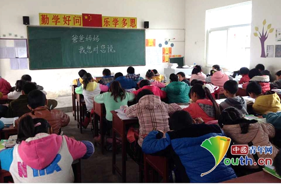
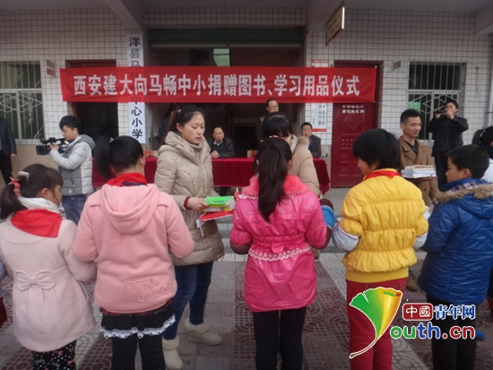

孩子说去城里打工的父母从没回来过
桂电志愿者网 日期：2017-04-21 来源：中国青年网
“在殿堂和田垄之间看，你选择后者，脚踏泥泞，俯首躬行，在荆棘和贫穷中拓荒。洒下的汗水是青春，埋下的种子叫理想，守在悉心耕耘的大地静待收获的时节。”这是感动中国2016年度人物秦玥飞的颁奖辞，一个毕业于耶鲁大学，现任湖南省衡山县福田铺乡白云村的大学生村官，也是全国性公益项目黑土麦田公益(ServeforChina)的联合发起人。
了解到秦玥飞的事迹已经是距离我支教回来将近20个月了，看到他在农村建设的种种，也将我的思绪带回到那一年，我与孩子们一起生活的那年时光。
2013年初的一天，在一次和朋友的偶然聊天中，她向我提到了“研究生支教团”这几个字，这是我第一次听到这个项目，朋友对我说，你可以去试试呀，你不是喜欢当老师吗？我笑笑，没有回答，可那一次打趣的话却让我和一个陌生的小镇结下了不解之缘。
初来乍到，请多关照
2014年8月31日，我作为第十六届研究生支教团的一员背起行囊，与一同服务的4个小伙伴穿过秦岭的一个个隧道，在明暗交替中，来到了这个我将终生难忘的小镇，陕西省汉中市洋县马畅镇。

在没到服务地之前，我总是想象着自己当老师的样子，光是与孩子们的初次见面，我就设计了好多种场景，但当我来到授课班级，第一次一个人站在讲台上，面对着五十几名只有十几岁的孩子的时候，脑子里竟突然一片空白，明明在家已经排练了好多次的我，当时除了简单的自我介绍外，就开始不知所云了，孩子们直直的看着我，目光所及之处都是他们天真的面庞，那一刻强烈的责任感涌上心头，他们就是我的学生，我要对他们负责。坦白讲，我很担心第一次的见面会被孩子们给一个“下马威”，但很感谢他们在一开始就送给了我最棒的礼物——倾听。
那时，刚刚转换为老师身份的我，经验不足，方法不多，是可爱的孩子们的一声声老师，鼓舞着我继续前行。
与你相遇，好幸运
记得刚开学几天，就是教师节了，走在校园里，看着周围的老师被学生簇拥着，说着老师教师节快乐，我羡慕极了，但由于刚来学校没多久，不敢奢望孩子们会给我送上节日祝福，可当我走进教室，孩子们齐声说小职老师教师节快乐，我从未想过他们会为一个相处不到10天的老师准备这样的惊喜，下课后，有的孩子围着我问东问西，有的悄悄的将自己准备的卡片或者折得花塞进我手里，害羞的说完老师给你，就跑开了，那一天我总是情不自禁的嘴角上扬，那一天是我真真实实感受教师这个职业的魅力。

我们一起支教的小伙伴曾经对我说，他说，他从来没有幻想着要成为超人，但看到孩子们那么需要他的时候，他真的希望自己可以变成超人，帮助孩子们解决他们的种种问题，其实，在孩子们心中，他早已是无所不能的超人老师了。
孩子们围着我问东问西，拉着我谈天说地的场景还历历在目，是孩子们给了我看待世界的另一双眼睛，与你们相遇，我好幸运。
想说爱你不容易
我们所服务的地区是一个国家级贫困县，这里的孩子们大都由年迈的爷爷奶奶照顾，爸爸妈妈常年外出打工，有的孩子和父母一年甚至几年才能见一次面，沟通少之又少。而对于小小年纪的他们来说，与父母一起的时光正是他们最最开心与珍贵的。针对这种情况，们组织策划了“勇敢说爱你”和“爸爸妈妈我想对您说”这两个活动，让孩子们回家跟一直照顾他们的爷爷奶奶说一句，您辛苦了，我爱您，并给自己在外打工的爸爸妈妈写一封信。当时我担任一个班级的品德老师，所以他们给父母写信的时间就放在了课堂上，我看到有的孩子很快提笔，一会儿就写了好几行，有的孩子拿这笔，想写又不知道如何让开始，有的孩子写着写着，开始小声抽泣，让我印象最深的是一个坐在后排的男孩，别人都在写信的时候只有他定定的看着纸，从头到尾基本没有动笔，他平时话很少，几次给他补习他也是胡乱一写，匆匆交差，曾经联系过他的家人，只有爷爷一个人在照顾，忙里忙外，下课后，我走他身边，看到他的纸上写着爸爸妈妈冒号，然后又全部划掉了，于是当天放学后，我们进行了服务期间的第一次家访，我们到的时候爷爷还没有回来，我们坐在小板凳上，看着这个他称作家的地方，心理很难受，这是很多年前的那种土房子，灯光暗暗的，我问他平时在哪学习，他指了指门口的台阶和一个高一点的板凳，我们几个互相看了看，心疼之余又不知如何安慰，这时爷爷回来了，爷爷说他基本没有见过他的父母，他的爸妈在生下他没多久就去城里打工，刚去那几年还回来过几次，也都是来去匆匆，现在已经是5、6年没有回来过了，他一个老人，没有文化，教不了孙子什么，只是盼望着他能够健康长大，爷爷也就安心了，我问爷爷，为什么不试着联系孩子的父母呢，爷爷叹了口气，摸了摸孙子的头，默不作声，当时策划这两个活动的时候只是想着希望孩子们学会表达感情，增进与城里务工父母的亲情，但后来我们才知道，有一种去城里打工的父母是再也不会回来了的。
【责任编辑：李彦龙】